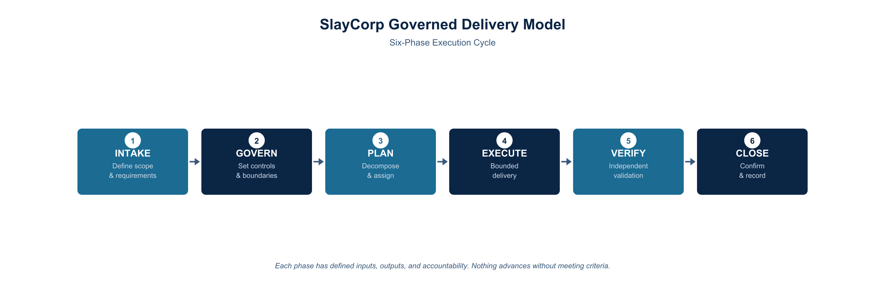

SlayCorp engages at three levels, each with increasing scope and strategic depth. Every tier includes defined deliverables, structured cadence, and governed accountability.
Tactical delivery of bounded workstreams. Defined scope, acceptance criteria, and completion timelines. You define the objective — we deliver the result.
Multi-project coordination with cross-functional accountability, stakeholder alignment, and governed delivery cycles across your organization.
Business alignment, growth strategy, and long-term delivery architecture. Embedded at the executive level to drive organizational outcomes.
Within every engagement tier, all delivery work follows SlayCorp's six-phase governed cycle. This model applies consistently regardless of program size, domain, or complexity.

| Phase | Purpose |
|---|---|
| Intake | Receive and scope the work request — establish mission context and constraints |
| Govern | Define authority boundaries, acceptance criteria, and governance rules before execution |
| Plan | Decompose work into bounded contracts with explicit success criteria |
| Execute | Deliver against contract within approved scope — no self-modification, no scope expansion |
| Verify | Independent verification against acceptance criteria by a separate agent — no self-certification |
| Close | Archive decision artifacts, update state, capture lessons for validated memory |
Every engagement begins with documented scope. No ambiguity about what will be delivered, by when, and against what criteria.
Weekly execution updates. Biweekly stakeholder syncs. Monthly strategic reviews. Quarterly reassessments. Predictable rhythm — not ad-hoc status checks.
Success is measured by deliverables completed and outcomes achieved — not hours logged or seats filled.
SlayCorp brings its own systems, tools, and methods. We integrate with your environment without creating dependency.
Lower coordination risk through clear role separation. Stronger accountability through documented scope and measurable outcomes. Faster delivery through a repeatable cycle that reduces ramp-up time and decision fatigue. And control in sensitive environments — governance designed to hold under pressure, not just under ideal conditions.